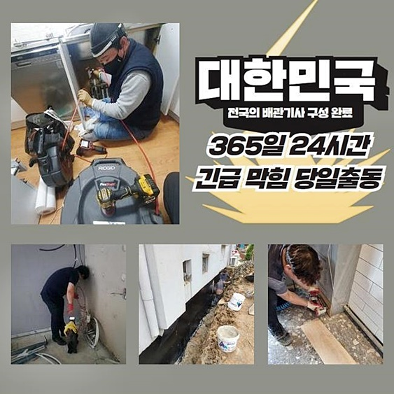
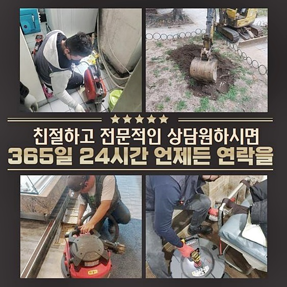
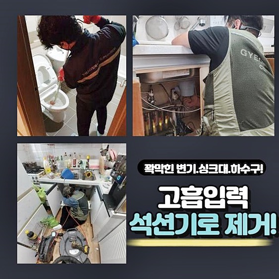
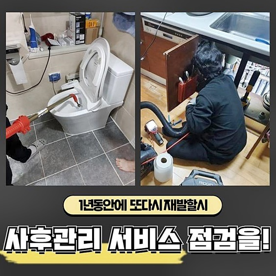
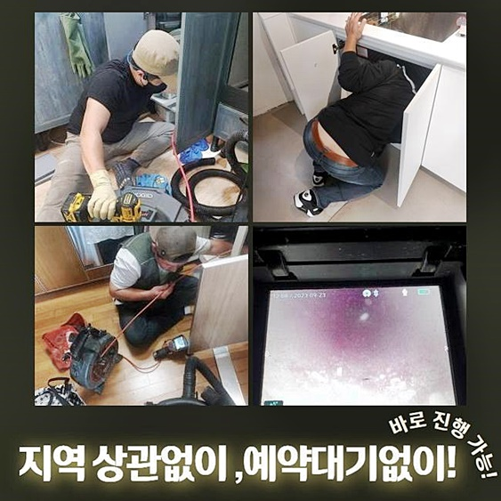

🏠 대원동오수관역류 외삼미동 배수구뚫기 물샘전문업체
용인 원동 하수구막힘 전문 시공 후기

📋 작업 개요
- 위치: 용인 원동, 원동, 용인
- 서비스 유형: 하수구막힘, 배관막힘, 집수정막힘, 누수수리, 역류해결, 뚫는업체, 배관청소, 고압세척, 설비공사, 악취차단
- 작업 일시: 2024. 6. 7. 11:01
- 업체명: 하수구수사대 (010-5615-2118)
🔍 문제 상황
대원동오수관역류 외삼미동 배수구뚫기 물샘전문업체
급작스레 배관에서 고장이 나타났던 때가 몇 번쯤은 있으셨을 거라 판단하는데요
가정내에 설비된 파이프가 넘치는 사태가 일어나 하수관 개문을 실시하신 사실도 고객님의 삶 속에서 있을 것이라 생각하고 있는데요
파이프 내부로 찌꺼기들이 투입되면 초창기에는 별 문제가 나타나지 않지만 지속해서 누적되면 차단이 돼버리죠
욕실을 이용하지 못한다면 불편함의 수준이 늘게 된답니다
문제가 생긴 배관을 처치해 보려고 긴 플라스틱도 넣어보고 슬러지 전용 약품까지 반영하였는데도 뚫어내지 못했다면 하수관 개문 전문인에게 조속히 연락해 점검받으셔야 한답니다
방관은 의도와 다르게 상태를 좋지 않게 변모시킬 수 있단 걸 넘겨 버리면 차후 문제가 커질 수 있답니다
본 글에서는 배관 세척업무와 연계된 이야기와 갑자기 정체된 사태 가운데 적절하게 조처하는 방책을 선보여 드리겠습니다
이번 글에서 소개하여 드릴 지점과 흡사한 막힘으로 난해한 상태라면 한층 정밀한 조치가 요망돼요
말씀드릴 내용은 공장 사장님의 촉박한 요구에 부응하여 즉각 내방하였던 데입니다
공장의 야외에 위치한 파이프가 막혀버려 공장 운영에 어려움이 있었답니다
즉각 그 곳에 갔더니 관이 깊었고 막힌 곳이 멀었답니다 작업이 수월하지 않을 거란 것을 예감하였습니다
워낙 시급한 문제여서 배관의 측면을 굴착하기로 했어요

🔎 원인 분석
💡 전문가 진단: 정밀 진단 장비를 사용하여 슬러지의 고착 여부를 판명하고 타격/세척 작업을 실시했습니다.
물의 이동이 이행되지 않아 내부를 볼 수 없는 상황이었답니다
이에 정밀한 막힘 원인 규명이 난해하므로 내시경cctv를 통하여 내측을 상황을 간파하기로 하였답니다
배관 안에 노폐물이 상당하였는데요 살펴보니 기름때였어요
사장님께서 어제도 분해용 약제를 써보기도 했지만 차도는 없었다 하시더라고요 배수가 전혀 진행될 수 없을 정도로 유분 덩이들이 차지하고 있는 모양새였어요
내시경cctv를 통하여 좀더 면밀하게 들여다보니 사각집수정에서부터 시관파이프까지 결부된 곳에 트러블이 발발하여 액상이 바깥으로 유출된 것이었어요
예측보다 큰 범위에서 고착화된 슬러지들로 들어차 있었습니다
여러 물건들을 취급하는 과정에서 발생한 유류찌꺼기에 연유한 덩어리들이 많을 수밖에 없었답니다
문의자분에게 중반부의 하수구를 뚫어내는 게 조속한 처치를 위해 필요하다고 설명하고 순차적인 프로세스를 고지한 뒤 시공을 진행했어요
해당 사항에 대한 승낙을 얻어낸 다음에 내부에 매립된 배수관부터 야외로 노출된 시관로에 이르기까지 뚫음을 시행했죠
노폐물의 양이 상당하였기에 초기 작업을 한 다음에 공장 내부로 이어진 배관도 기계를 투입해서 개문해내야 해요
이 경우엔 고속분쇄용기기를 가동하여야 되는데요 이 장비는 헤드 부분의 사슬이 고속으로 돌면서 내부에 적층된 이물들을 없애는 기능을 행하고 있답니다
간혹가다 손님분들이 고RPM으로 가동되면서 배관 내측에 문제가 생기지 않을까 물어보시는 경우도 계신데요
미숙한 능력을 토대로 어설프게 접근하게 된다면 배수관에 문제가 일어나기도 하겠지만 저희처럼 숙련성을 갖춘 이들에겐 포함되지 않는 다는 것을 알려드립니다
배관cctv로 안쪽을 진단해가며 막힌 부분과 인과관계를 파악한 다음에 본시공에 돌입하였죠

🔧 작업 과정
제조공장에서 방류된 물에 노폐물들이 한가득 들어차있는 모양새였답니다
샤프트기기를 이용해 이물질을 해체하는 것을 보시곤 이제 해결의 기미가 보인다고 이야기 하시더라고요
조치하여야 하는 영역이 컸지만 타공지점을 중심으로 빈틈없이 청소를 이어나갔답니다
해당 지점에서는 유분이 다량 나올 수밖에 없고 다양한 변수에 근거해서 슬러지가 뭉치기에 신경써서 업무를 한다고 하더라도 말썽이 일어날 수 있는 것입니다
깔끔한 모습을 보시고는 차후 신경써서 사용해야 하겠다며 흡족해 하시더라고요
제조공장 안에서 물이용을 할 수 없는 사태로 발전한 것은 야외에 매립되어 있는 파이프에서 정체가 발발하였기 때문이예요
배수에 문제가 나타난다면 전 근무자에게 불편을 초래하죠 여러 노폐물들이 맨눈으로 발현될 정도로 꽤 누증되어 있었어요
장기간 특별한 정비를 안했다고 알려주셨어요
이로인해 배수구를 통해 여러가지의 유분이 유입되었다는 사실을 파악하게 되었어요
건축물 자체가 낙후되었기에 배수관 역시 낙후되었을 여지가 있는데요
배관이 낡아지는 것도 배수관의 차단이 생겨났을 때에 심각해질 수가 있으니 주의가 필요합니다
잔재들이 점층적으로 누적되면 물흐름을 막기 때문에 배관부속에도 타격을 줄 수 있고 가뜩이나 얇아진 곳에서는 누수가 나타나기도 해요
정체되었던 물질들은 플렉스샤프트를 통해서 충분하게 소멸시킬 수 있었기에 부가적인 고압세정은 이행할 필요가 없었어요
고속분쇄 과정을 바탕으로 슬러지들을 전체적으로 없애는 업무를 속행했어요
일상 가운데 배수관관리가 안 되었다면 수시로 막힐 수 있으며 역류증세가 나타날 수도 있죠
빠르게 고인물이 소멸되지 않고 평상시와 이질감이 느껴진다고 하면 재빨리 전문가를 수소문하여 의뢰하실 것을 권합니다
한번이라도 역류나 막힘이 나타났다면 점차적으로 사태의 수준이 비경해질 가망성이 커요
재빠른 방문과 수리도 중요하지만 숙련된 담당자를 만나는 부분도 중요하답니다
충분한 업력을 가졌는지 반드시 체크해보셔야 해요
충분한 경력과 제반설비 이것을 만족한다면 고난도의 막힘이 발발하였어도 처리가 가능합니다
저희팀은 통수업무가 원활히 진행되도록 첨단 공구류를 이용하고 있어요
뚫음시공에 마땅한 장비들을 활용하도록 석션기기를 포함한 전문 기계들을 맞춘 다음에 공사현장으로 이동하고 있어요


✅ 작업 완료
노폐물들을 미는 방책으로 일을 속행하고 배관전용cctv를 투입시켜 안쪽에 고형물들이 잔재하는지 여부를 체크하고 청소를 이어나가고 있어요
이런식으로 공사를 받게 된다면 이물이 쉽게 안쌓여서 재발에 대한 사안은 우려하지 않으셔도 돼요
갖가지 기름때와 찌꺼기가 사라지게 되었답니다
막힘이나 역류가 나타나지 않았어도 정기적인 예방 시공을 신청할 수 있습니다
예약하신 시간에 늦지 않게 진단 및 방문을 해드리며 토요일에도 정상적으로 일하고 있으니 걱정말고 전화해 주십시오
방관시하지 마시고 변화가 목격되면 바로바로 대응하는 것을 권유해 드립니다


⚠️ 베란다 누수 및 방수 관리 방법
- ✅ 비가 많이 올 때 창틀 주변이나 아래층 천장에 얼룩이 생기는지 정기적으로 확인해 보세요.
- ✅ 우수관 주변 실리콘 마감이 들뜨거나 깨진 틈새가 있는지 손상 여부를 수시로 체크하세요.
- ✅ 베란다 바닥 타일의 줄눈(메지)이 소실되면 그 틈으로 물이 침투하여 누수가 유발됩니다.
- ✅ 누수 의심 증상 발견 시 방치하면 아래층 손실이 커지므로 즉시 전문가의 진단을 받으십시오.
💡 핵심 정리
- 확실한 장비 작업(내시경 점검 및 샤프트 스케일링)으로 원인을 뿌리 뽑습니다.
- 작업 후 1년 이내에 동일한 부위 재발 시 100% 무상 A/S 서비스를 보장합니다.
- 서울 · 경기 · 인천 전 지역에 24시간 언제든 긴급 출동할 수 있도록 항시 대기 중입니다.
❓ 자주 묻는 질문 (FAQ)
🚨 용인 원동 하수구막힘 문제로 고민이신가요?
정확한 원인 진단과 확실한 시공으로 재발 없는 해결을 약속드립니다.
24시간 긴급 출동 | 서울 · 경기 · 인천 전지역 | 1년 내 재발 시 무상 A/S